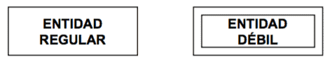
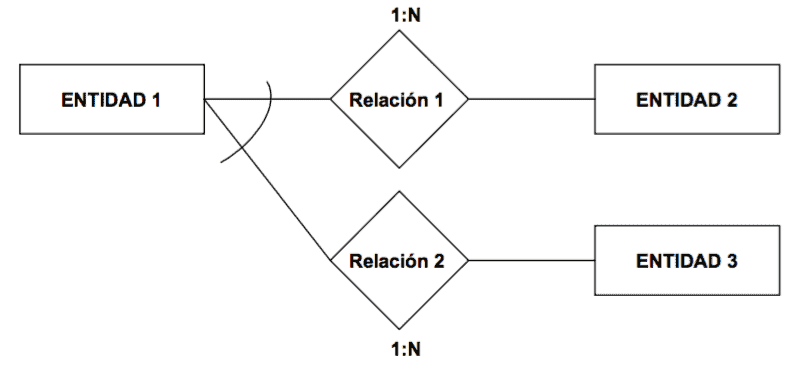

Conceptos básicos
Lenguaje de definición/manipulación/control de datos:
- DDL: creación, manipulación o borrado de tablas y de todo lo relacionado con ellas como los atributos, índices o reglas de integridad (ej: CREATE, DROP, ALTER)
- DML: consultas, inserciones, modificaciones o borrados de los datos (ej: SELECT, INSERT, UPDATE, DELETE)
- DCL: controla el acceso a los datos (ej: GRANT, REVOKE)
Propiedades ACID:
- Atomicidad: la transacción tiene efecto o no en su totalidad, nunca parcialmente
- Consistencia: se debe preservar la integridad y consistencia de la BD
- Aislamiento: los cambios no son visibles hasta ejecutar el commit
- Duradero: los cambios se hacen persistente una vez ejecutado el commit
SGDB
Arquitectura ANSI/X3/SPARC
- Nivel físico o interno: describe cómo los datos se almacenan en la base de datos y en el hardware del equipo
- Nivel conceptual: describe los datos que se almacenan dentro de la BD y cómo los datos están relacionados entre sí (el DBA trabaja en este nivel)
- Nivel lógico o externo: formado por las vistas de usuario, que excluye datos irrelevantes y datos que el usuario no está autorizado a acceder (el usuario trabaja en este nivel)
ANSI establece 3 familias de modelos de datos:
- Modelo relacional: al que nos referimos cuando hablamos de SGDB sin concretar
- Modelo codasyl: estructura en red donde se establecen relaciones n:m
- Modelo jerárquico: presenta una estructura en árbol donde nodos y ramas siguen una relación del tipo 1:n
Concurrencia
Los problemas que pueden surgir a raíz de distintas transacciones concurrentes (T1 y T2):
- Lectura no repetible: T1 lee dos veces un valor y no coincide porque entre medias T2 lo ha cambiado
- Lectura sucia: T1 lee un dato modificado por T2 antes de que este haya hecho el commit de manera que si T2 falla (rollback) o vuelve a modificar el dato, T1 habría leído un dato que nunca llego a ser valido
- Lectura fantasma: T1 hace dos veces la misma consulta y en la segunda obtiene más datos porque entre medias T2 añadió nuevas filas
Esto esta relacionado con los niveles de aislamiento:
- Lectura no comprometida: Los cambios realizados por las transacciones se encuentran disponibles inmediatamente
- Lectura comprometida: Los cambios solo están disponibles después del commit. Precie lecturas sucias
- Lectura repetible: las filas leídas o actualizadas por una transacción quedan bloqueadas hasta que finaliza dicha transacción. Previene la lectura sucia y la lectura no repetible
- Serializable: las transacciones ejecutadas de manera simultanea producen los mismos efectos que si se ejecutaran en serie. Previene todos los problemas
| Nivel de aislamiento |
Lectura | ||
|---|---|---|---|
| sucia | no repetible | fantasma | |
| Lectura no comprometida |
SI | SI | SI |
| Lectura comprometida |
NO | SI | SI |
| Lectura repetible |
NO | NO | SI |
| Serializable | NO | NO | NO |
El mecanismo de control más usado es el Two-phase-locking que garantiza la serialización de las transaciones. Su funcionamiento consiste en que cada transacción debe emitir todas las solicitudes de bloqueo antes de que pueda emitir cualquier solicitud de desbloqueo. Las fases son:
- Fase de expansión (crecimiento): la transacción emite cualquier nueva solicitud de bloqueo que se requiera. Las solicitudes de desbloqueo no están permitidas en esta fase.
- Fase de reducción: la transacción libera bloqueos adquiridos en la fase de expansión. Las nuevas solicitudes de bloqueo no están permitidas en esta fase.
Modelo relacional
Propuesto por E.F. Codd en 1970, es un modelo basado en el concepto matemático de la teoría de conjuntos, donde los datos se estructuran en forma de relaciones modeladas mediante tablas.
Para manipular la información se utiliza un lenguaje relacional:
- Álgebra relacional permite describir la forma de realizar una consulta
- Cálculo relacional lenguaje declarativo que permite construir expresiones equivalentes a las del álgebra relacional y es la base del lenguaje SQL
| Álgebra relacional | SQL |
|---|---|
Selección c(R) |
select * from R where c |
Proyección a1, a2 ... an (R) |
select a1, a2 ... an from R |
Producto cartesiano RxS |
select * from R, S |
Join natural R ⋈ S |
select * from R,S where Pk(R)=Fk(S) |
Unon R ∪ S |
select * from R union select * from S |
Intersección R ∩ S |
select * from R instersect select * from S |
Diferencia R - S |
select * from R minus select * from S |
Cociente R/S |
no existe en sql, hay que hacerlo combinando otros operadores |
Reglas de Codd
- La regla de la información: Toda la información en un RDBMS está explícitamente representada de una sola manera por valores en una tabla
- La regla del acceso garantizado: Cada ítem de datos debe ser lógicamente accesible al ejecutar una búsqueda que combine el nombre de la tabla, su clave primaria y el nombre de la columna
- Tratamiento sistemático de los valores nulos: La información inaplicable o faltante puede ser representada a través de valores nulos
- La regla de la descripción de la base de datos: La descripción de la base de datos es almacenada de la misma manera que los datos ordinarios, esto es, en tablas y columnas, y debe ser accesible a los usuarios autorizados
- La regla del sub-lenguaje integral: Debe haber al menos un lenguaje que sea integral para soportar la definición de datos, manipulación de datos, definición de vistas, restricciones de integridad, y control de autorizaciones y transacciones
- La regla de la actualización de vistas: Todas las vistas que son teóricamente actualizables, deben ser actualizables por el sistema mismo
- La regla de insertar y actualizar: La capacidad de manejar una base de datos con operandos simples se aplica no sólo para la recuperación o consulta de datos, sino también para la inserción, actualización y borrado de datos
- La regla de independencia física: El acceso de usuarios a la base de datos a través de terminales o programas de aplicación, debe permanecer consistente lógicamente cuando quiera que haya cambios en los datos almacenados, o sean cambiados los métodos de acceso a los datos
- La regla de independencia lógica: Los programas de aplicación y las actividades de acceso por terminal deben permanecer lógicamente inalteradas cuando quiera que se hagan cambios (según los permisos asignados) en las tablas de la base de datos
- La regla de la independencia de la integridad: Todas las restricciones de integridad deben ser definibles en los datos, y almacenables en el catálogo, no en el programa de aplicación
- La regla de la distribución: El sistema debe poseer un lenguaje de datos que pueda soportar que la base de datos esté distribuida físicamente en distintos lugares sin que esto afecte o altere a los programas de aplicación
- Regla de la no-subversión: Si el sistema tiene lenguajes de bajo nivel, estos lenguajes de ninguna manera pueden ser usados para violar la integridad de las reglas y restricciones expresadas en un lenguaje de alto nivel (como SQL)
Normalización de una base de datos
Es el proceso de rediseño de las tablas de una BD con el objetivo de minimizar la redundancia de datos.
Siendo:
- Una superclave es cualquier conjunto de atributos que permita distinguir a todas las filas de una tabla
- Una clave candidata es una superclave mínima, es decir, que si se le quita algún atributo deja de ser superclave
- Un atributo primario es aquel que pertenece a una clave candidata y un atributo secundario el que no
- una dependencia transitiva es una dependencia funcional X → Z en la cual Z no es inmediatamente dependiente de X, pero sí de un tercer conjunto de atributos Y, que a su vez depende de X, es decir, X → Z por virtud de X → Y e Y → Z
- un determinante es un atributo que determina completamente a otro
- una tabla con una dependencia multivaluada es una donde la existencia de dos o más relaciones independientes muchos a muchos causa redundancia
Tenemos que:
- 1FM:
- todos los atributos son atómicos
- no debe existir variación en el número de columnas
- los campos no clave deben identificarse por la clave (dependencia funcional)
- el significado es independiente del orden de filas o columnas
- 2FM: 1FM + todos los atributos dependen de forma completa de la clave (dependencia completamente funcional)
- 3FM: 2FM + ningún atributo secundario depende transitivamente de la clave.
Otra forma de definirlo es que para cada una de sus dependencias funcionales
X → A se ha de dar una de las siguientes condiciones:
- X contiene A, ó
- X es una superclave, ó
- A es un atributo primario
- FNBC: 3FM + todo determinante es clave candidata
- 4FN: (3FM o FNBC) + no poseer dependencias multivaluadas no triviales
- 5FN: 4FN + no existen relaciones join no triviales que no se generen desde claves
Axiomas de Armstrong
Las propiedades de la dependencia funcional vienen descritas por los 3 axiomas de Armstrong:
- Dependencia funcional reflexiva: A partir de cualquier atributo o conjunto de atributos siempre puede deducirse él mismo. Ej: Si la dirección o el nombre de una persona están incluidos en el DNI, entonces con el DNI podemos determinar la dirección o su nombre.
- Dependencia funcional aumentativa: Si con el DNI se determina el nombre de una persona, entonces con el DNI más la dirección también se determina el nombre y su dirección.
- Dependencia funcional transitiva: Sean X, Y, Z tres atributos de la misma entidad. Si Y depende funcionalmente de X y Z de Y, pero X no depende funcionalmente de Y, se dice entonces que Z depende transitivamente de X
Modelo Entidad/Relación Extendido
Se compone de Entidades:
- regulares: existe por si mismas
- débiles: su existencia depende de otra entidad

y Relaciones:
- relaciones regulares
- relaciones débiles:
- dependencia de existencia: las ocurrencias de la entidad débil no pueden existir sin la ocurrencia de la entidad regular de la que dependen
- dependencia de identificación: además de lo anterior, las ocurrencias del la entidad débil no se pueden identificar sólo mediante sus propios atributos, sino que se les tiene que añadir el identificador de la entidad regular de la que dependen
- relaciones exclusivas: su existencia entre dos entidades implica la no existencia de otras relaciones

Las relaciones se caracterizan por su:
- Tipo de correspondencia: número máximo de ocurrencias de una entidad que
pueden intervenir en una ocurrencia de la relación:
- relaciones 1:1: cada ocurrencia de una entidad se relaciona con una y solo una ocurrencia de la otra entidad
- relaciones 1:N: cada ocurrencia de una entidad puede estar relacionada con cero, una o varias ocurrencias de la otra entidad
- relaciones M:N: cada ocurrencia de una entidad puede estar relacionada con cero, una o varias ocurrencias de la otra entidad y viceversa
- Cardinalidad: el número máximo y mínimo de ocurrencias de una entidad que pueden estar interrelacionadas con una ocurrencia de otro entidad
La cardinalidad máxima coincide con el tipo de correspondencia.
Las extensiones del modelo E/R consisten en:
- Generalización: se abstrae una entidad de nivel superior a partir de varias entidades (ej: de profesor y estudiante a persona)
- Especialización: inversa de generalización (ej: de empleado a secretario, técnico e ingeniero)
- Categorías: subtipo que aparece como resultado de la unión de varios tipos de entidad (ej: teniendo persona y compañia se crea subtipo propietario para relacionarlo con vehículo)
- Agregación: construir un nuevo tipo de entidad como composición de otros y sus relaciones (ej: teniendo empresa y solicitante relacionados por entrevista se crea el tipo compuesta empresa-entrevista-solicitante para relacionarla con oferta)
- Desagregación: inverso de la agregación
- Asociación: relacionar dos tipos de entidades que normalmente son de dominios independientes, pero coyunturalmente se asocian
Estas extensiones dan lugar a jerarquías entre tipos y subtipos
O = los subtipos pueden solaparse
U = uniones por categorías
La presencia de una jerarquía total se representa con una doble línea entre el supertipo y el triángulo
Estándares ODBC, JDBC, .NET y PHP
ODBC: estándar de acceso a BD que proporciona una interfaz a las aplicaciones. Para ello necesita una capa intermedia (CLI) entre la aplicación y el SGDB, que se encarga de traducir las consultas de datos desde la aplicación a comandos para ese SGDB concreto.
JDBC: conecta aplicaciones Java con un gestor de BD desde el lenguaje de programación Java. Tipos de drivers:
- Tipo 1 (Puente JDBC-ODBC): convierte el método JDBC a una llamada a una función ODBC. Utiliza los drivers ODBC para conectar con la BD.
- Tipo 2 (Driver parcialmente nativo): convierte el método JDBC a llamadas a una API nativa que debe estar en el cliente que accede a la BD.
- Tipo 3 (JDBC middleware): el cliente cuenta con un driver JDBC puro que conecta con un servidor intermedio encargado de traducir los métodos JDBC al lenguaje específico del SGBD.
- Tipo 4 (Driver Java puro): desarrollado en Java, utiliza directamente el protocolo de la BD. Ofrece mejor rendimiento pero está ligado a un SGBD concreto.

.NET ofrece ADO.NET que incorpora la posibilidad de cachear la información obtenida, y es habitual que se integre con Entity Framework que es un mapeador objeto-relacional de Microsoft (La alternativa anterior era OLE DB y esta deprecada).
PHP ofrece PDO para drivers para las bases de datos más habituales.